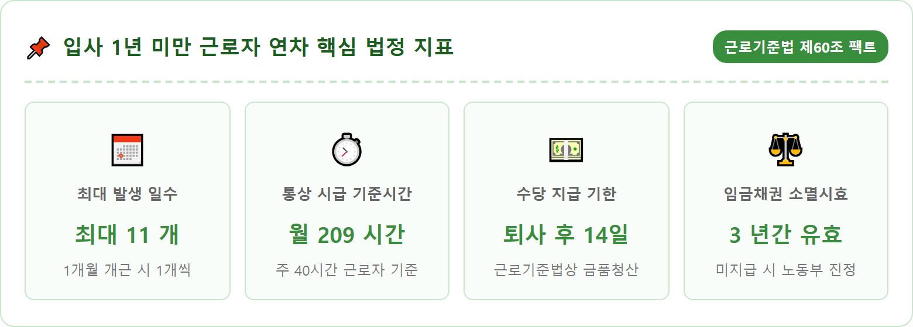
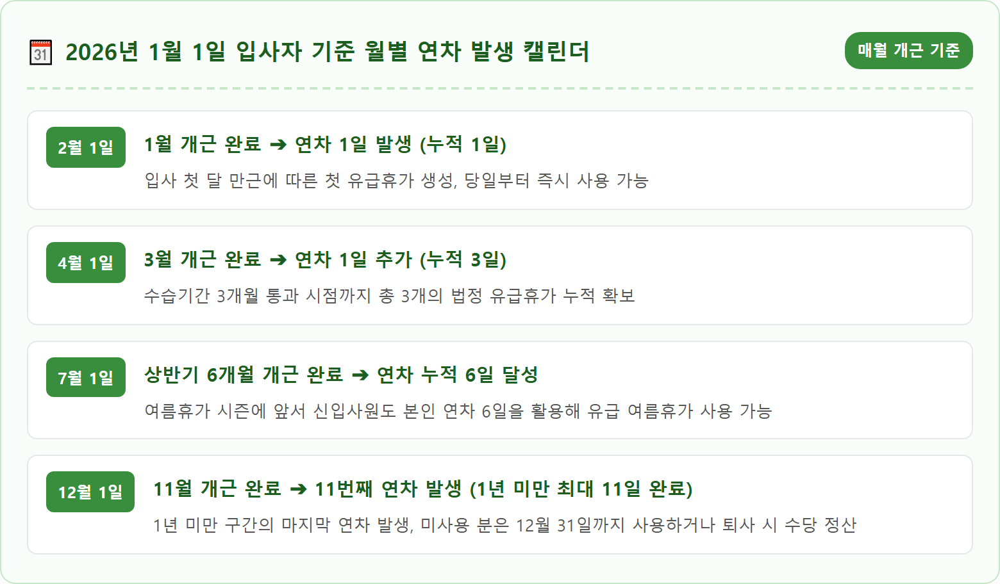
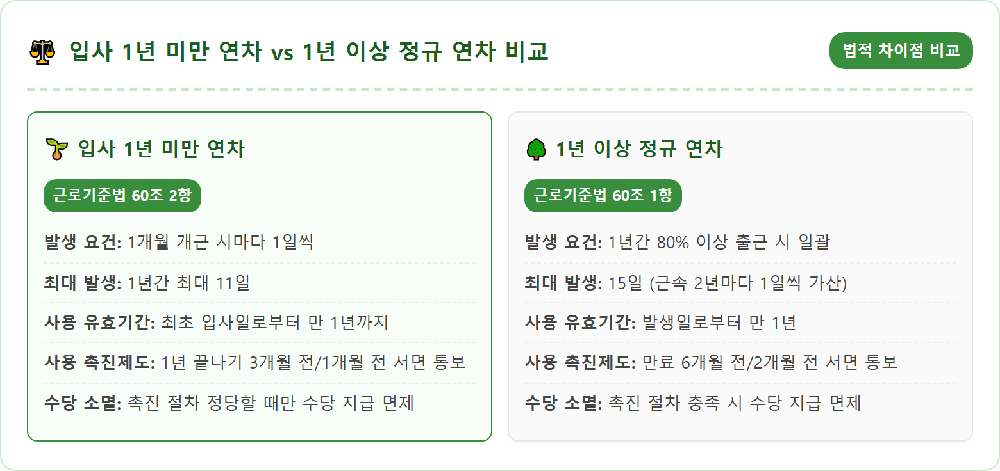
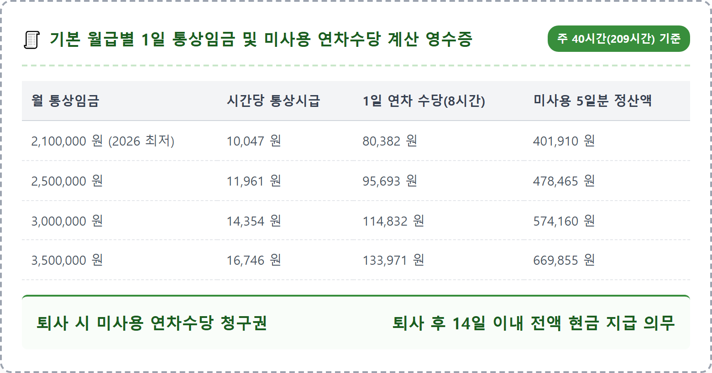
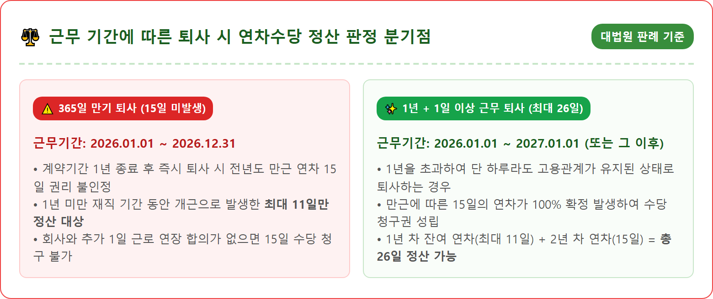

A crisp and modern professional flat-lay desk scene focusing on Korean labor law and HR employment payroll calculation. An open elegant desktop calendar highlighting monthly dates, an official employment contract with Korean text headings, a digital sleek calculator showing numerical figures, and a neat salary payout statement sheet. Beside them, a high-end fountain pen and a warm cup of coffee on a clean light oak wooden desk. Bright, clean natural office lighting, professional corporate HR workspace atmosphere, realistic high-resolution 8k commercial photography, 1:1 aspect ratio.





| 구분 | 핵심 요약 법정 기준 |
|---|---|
| 법적 근거 | 근로기준법 제60조 제2항 (1년 미만 유급휴가) |
| 발생 조건 | 1개월 개근 시 익월 1일 유급휴가 1일 발생 (1년간 최대 11일) |
| 사용 유효기간 | 최초 입사일로부터 만 1년이 되는 날까지 (이후 소멸 및 수당 전환) |
| 1일 수당 산정식 | (월 통상임금 ÷ 209시간) × 8시간 |
| 퇴사 시 수당 계산 | 1일 통상임금 × 미사용 잔여 연차 일수 |
| 퇴사 시 지급 기한 | 퇴직일로부터 14일 이내 (위반 시 연 20% 지연이자 발생) |
| 소멸시효 | 임금채권 3년 (3년 이내 미지급 수당 전액 청구 가능) |
| 적용 사업장 | 상시 근로자 수 5인 이상 사업장 필수 적용 |